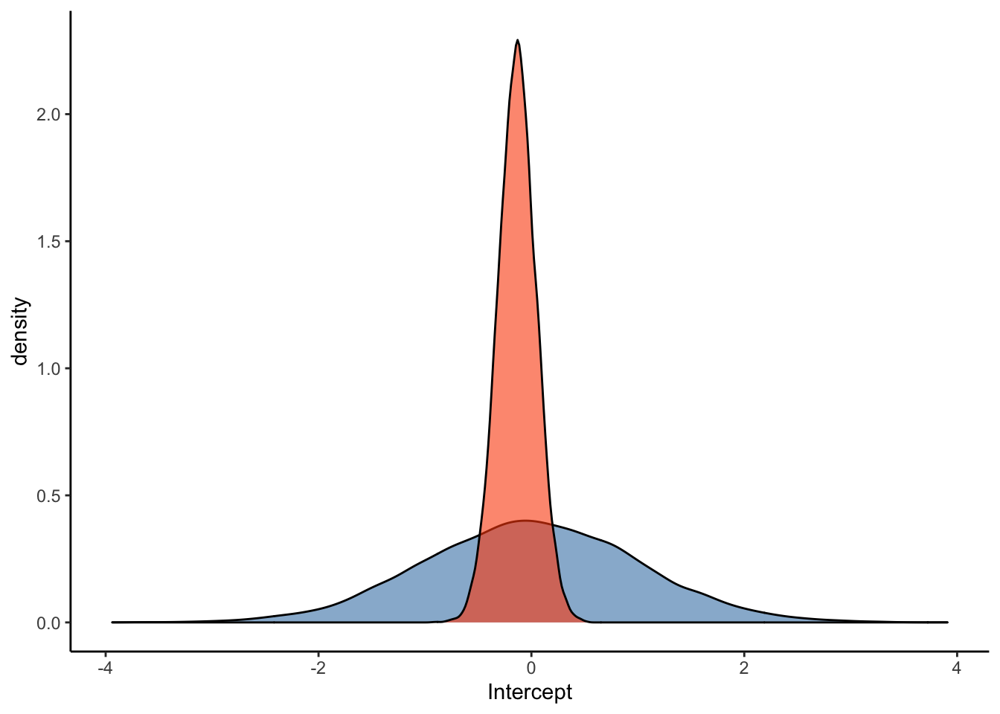
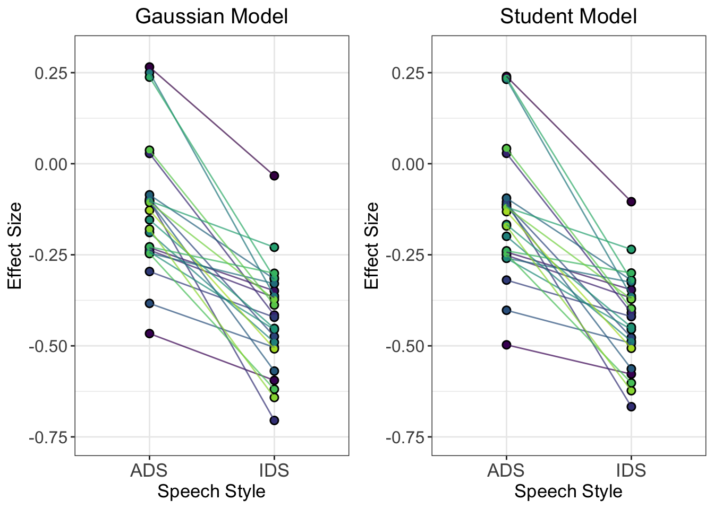

Chapter 5 Informed priors
5.1 Video on Informed priors:
5.2 Hands-on Exercises
5.2.1 How to Encode Information in Priors
In this part, we’ll have a closer look at how to encode information from previous studies within the prior specifications of our models. Let’s start with the meta-analytic prior (i.e., Mean ES: 0.62, SE = 0.13) and add it to our prior specifications for the multi-level model. We do this by specifying the prior for the slope as normal(0.62, 0.13), as in the code block below:
Articulation_f3 <- bf(ArticulationS ~ 1 + Register + (1+Register|Subject))
meta_analytic_prior <- c(
prior(normal(0, 1), class = Intercept),
prior(normal(0, 1), class = sd, coef = Intercept, group = Subject),
prior(normal(0.62, 0.13), class = b),
prior(normal(0, 1), class = sd, coef = RegisterIDS, group = Subject),
prior(normal(1, 0.5), class = sigma),
prior(lkj(2), class = cor))
Articulation_MAprior_m3 <-
brm(
Articulation_f3,
data = d,
save_pars = save_pars(all = TRUE),
family = gaussian,
prior = meta_analytic_prior,
#file = "Articulation_MAprior_m3",
sample_prior = T,
iter = 10000,
warmup = 1000,
cores = 2,
chains = 2,
backend = "cmdstanr",
threads = threading(2),
control = list(
adapt_delta = 0.999,
max_treedepth = 20))pp_check(Articulation_MAprior_m3, ndraws = 50)
plot(conditional_effects(Articulation_MAprior_m3), points = T)
summary(Articulation_MAprior_m3)## Family: gaussian
## Links: mu = identity; sigma = identity
## Formula: ArticulationS ~ 1 + Register + (1 + Register | Subject)
## Data: d (Number of observations: 48)
## Draws: 2 chains, each with iter = 10000; warmup = 1000; thin = 1;
## total post-warmup draws = 18000
##
## Group-Level Effects:
## ~Subject (Number of levels: 24)
## Estimate Est.Error l-95% CI u-95% CI Rhat Bulk_ESS
## sd(Intercept) 0.33 0.23 0.02 0.86 1.00 3037
## sd(RegisterIDS) 0.65 0.40 0.03 1.49 1.00 2103
## cor(Intercept,RegisterIDS) -0.10 0.44 -0.84 0.76 1.00 6077
## Tail_ESS
## sd(Intercept) 3653
## sd(RegisterIDS) 3806
## cor(Intercept,RegisterIDS) 9496
##
## Population-Level Effects:
## Estimate Est.Error l-95% CI u-95% CI Rhat Bulk_ESS Tail_ESS
## Intercept -0.46 0.20 -0.85 -0.07 1.00 8548 10514
## RegisterIDS 0.44 0.13 0.19 0.69 1.00 17671 13295
##
## Family Specific Parameters:
## Estimate Est.Error l-95% CI u-95% CI Rhat Bulk_ESS Tail_ESS
## sigma 0.99 0.17 0.62 1.30 1.00 2424 1551
##
## Draws were sampled using sample(hmc). For each parameter, Bulk_ESS
## and Tail_ESS are effective sample size measures, and Rhat is the potential
## scale reduction factor on split chains (at convergence, Rhat = 1).Q8: How does the slope estimate for this model with the meta-analytic prior compare to that with the skeptical prior (i.e., Articulation_m3)?
Let’s try to do the same analysis for the Danish prior (i.e., Mean ES: -0.1, SE = 0.04):
danish_prior <- c(
prior(normal(0, 1), class = Intercept),
prior(normal(0, 1), class = sd, coef = Intercept, group = Subject),
prior(normal(-0.1, 0.04), class = b),
prior(normal(0, 1), class = sd, coef = RegisterIDS, group = Subject),
prior(normal(1, 0.5), class = sigma),
prior(lkj(2), class = cor))
Articulation_Danishprior_m3 <-
brm(
Articulation_f3,
data = d,
save_pars = save_pars(all = TRUE),
family = gaussian,
prior = danish_prior,
#file = "Articulation_Danishprior_m3",
sample_prior = T,
iter = 10000,
warmup = 1000,
cores = 2,
chains = 2,
backend = "cmdstanr",
threads = threading(2),
control = list(
adapt_delta = 0.999,
max_treedepth = 20))pp_check(Articulation_Danishprior_m3, ndraws = 50)
plot(conditional_effects(Articulation_Danishprior_m3), points = T)summary(Articulation_Danishprior_m3)## Warning: There were 1 divergent transitions after warmup. Increasing adapt_delta
## above may help. See http://mc-stan.org/misc/warnings.html#divergent-transitions-
## after-warmup## Family: gaussian
## Links: mu = identity; sigma = identity
## Formula: ArticulationS ~ 1 + Register + (1 + Register | Subject)
## Data: d (Number of observations: 48)
## Draws: 2 chains, each with iter = 10000; warmup = 1000; thin = 1;
## total post-warmup draws = 18000
##
## Group-Level Effects:
## ~Subject (Number of levels: 24)
## Estimate Est.Error l-95% CI u-95% CI Rhat Bulk_ESS
## sd(Intercept) 0.38 0.24 0.02 0.89 1.00 2756
## sd(RegisterIDS) 0.49 0.32 0.03 1.18 1.00 2625
## cor(Intercept,RegisterIDS) -0.06 0.43 -0.80 0.79 1.00 9588
## Tail_ESS
## sd(Intercept) 2797
## sd(RegisterIDS) 1796
## cor(Intercept,RegisterIDS) 10682
##
## Population-Level Effects:
## Estimate Est.Error l-95% CI u-95% CI Rhat Bulk_ESS Tail_ESS
## Intercept -0.24 0.16 -0.56 0.08 1.00 14572 11578
## RegisterIDS -0.11 0.04 -0.19 -0.03 1.00 31309 13100
##
## Family Specific Parameters:
## Estimate Est.Error l-95% CI u-95% CI Rhat Bulk_ESS Tail_ESS
## sigma 0.87 0.15 0.53 1.15 1.00 1572 878
##
## Draws were sampled using sample(hmc). For each parameter, Bulk_ESS
## and Tail_ESS are effective sample size measures, and Rhat is the potential
## scale reduction factor on split chains (at convergence, Rhat = 1).Q9: How does the slope estimate for this model with the Danish prior compare to that with the skeptical prior (i.e., Articulation_m3)?
5.2.2 Prior-Posterior Updates Plot
Let’s run the following code to extract and visualise the prior and posterior distributions from the different models:
danish_prior_posterior <- as_draws_df(Articulation_Danishprior_m3) %>%
mutate(priors = "Danish") %>%
select(prior_b, b_RegisterIDS, priors)
ma_prior_posterior <- as_draws_df(Articulation_MAprior_m3) %>%
mutate(priors = "MA estimates") %>%
select(prior_b, b_RegisterIDS, priors)
skeptical_prior_posterior <- as_draws_df(Articulation_m3) %>%
mutate(priors = "Skeptical estimates") %>%
select(prior_b, b_RegisterIDS, priors)
Posterior <- rbind(danish_prior_posterior, ma_prior_posterior, skeptical_prior_posterior)
plot1 <- ggplot(Posterior) +
theme_classic() +
ggtitle("Priors") +
geom_density(aes(x = prior_b, fill = priors), alpha = 0.7) +
xlim(c(-1.5, 1.5)) +
geom_vline(xintercept = 0.0, linetype = 3) +
scale_fill_manual(name = "Prior",
labels = c('Meta-analytic', "Danish", "Skeptical"),
values=c("#FC4E07", "steelblue", "#228B22")) +
theme(plot.title = element_text(hjust = 0.5, size=15),
axis.ticks.y = element_blank(),
axis.text.y = element_blank(),
axis.title.y=element_blank(),
axis.line.x = element_line(size=0.1),
axis.line.y = element_line(size=0.0),
axis.text.x = element_blank(),
axis.title.x=element_blank(),
legend.position = "none")
plot2 <- ggplot(Posterior) +
theme_classic() +
xlim(c(-1.5, 1.5)) +
geom_density(aes(x = b_RegisterIDS, fill = priors), alpha = 0.7) +
xlab('Effect Size') +
ggtitle(expression(paste("Posteriors"))) +
geom_vline(xintercept = 0.0, linetype = 3) +
scale_fill_manual(name = "Priors:",
labels = c('Danish', 'Meta-analytic', "Skeptical"),
values=c("#FC4E07", "steelblue", "#228B22")) +
scale_color_manual(values=c("#FC4E07","#228B22", "steelblue")) +
theme(plot.title = element_text(hjust = 0.5, size=15),
axis.ticks.y = element_blank(),
axis.text.y = element_blank(),
axis.title.y=element_blank(),
axis.line = element_line(size=0),
legend.position = "bottom")
priors_posteriors_plot <- plot_grid(plot1, plot2, ncol=1)
priors_posteriors_plot
Q10: Why does the model with the Danish study prior not shift as much as those with the skeptical and meta-analytic priors?
Answer:
Q11: What does this tell us about the nature of evidence accumulation in Bayesian models?
Answer: